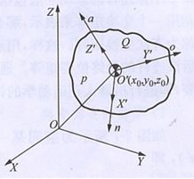

3.1 工业机器人的运动学分析
[任务描述]运动学分析是机器人运动规划、轨迹控制的基础，也是理解机器人坐标系的重要手段。对机器人进行运动学正、逆问题的研究，可以完成操作空间位置和速度对关节空间和驱动空间的映射。最重要的是可以研究末端执行器的运动规律，包括速度、加速度以及各关节之间的相互关系，并为动力学分析和运动控制提供依据。对于给定的机器人，已知机器人的几何参数和关节变量，由于关节的相对运动致使连杆运动，从而可以确定末端执行器相对给定坐标的位置和姿态。 或者已知机器人杆件的几何参数，根据末端执行器相在空间中的位置和姿态，以此可以确定机器人全部关节变量的值。
3.1.1机器人位置与姿态的描述
机器人末端执行器的位置和姿态简称为位姿。在空间坐标系中，位置是由三个移动自由度确定，姿态是由三个旋转自由度确定。
关节型机器人可视为由一系列关节连接起来的连杆组成。机器人运动学研究的是各杆件尺寸、运动副类型、杆间相互关系（包括位移关系、速度关系和加速度关系）等。手部相对固定坐标系的位姿和运动是我们研究的重点，因此，首先要建立相邻连杆之间的相互关系，即要建立连杆坐标系。把坐标系固定在机器人的每一个连杆的关节上，可用齐次变换来描述这些坐标系之间的相对位置和姿态方向。
1、刚体位姿的描述
（1）点的位置描述
如图3-1所示，在坐标系｛A｝中，空间任一点P的位置可用（3×1）的位置矢量AP来表示：
其中：Px ，Py ，Pz 为点在坐标系｛A｝中的三个位置坐标分量。
图3-1 空间点的位置
如用四个数组成的（4×1）列阵表示三维空间直角坐标系｛A｝中点P，则该列阵称为三维空间点P的齐次坐标，如下：
齐次坐标并不是唯一的，当列阵的第一项分别乘以一个非零因子ω 时，即
其中：a=ωPx ，b=ωPy ，c=ωPz 。该列阵也表示点P，点的齐次坐标表示不是唯一的。
（2）坐标轴的方向描述
方位也叫姿态。用i，j，k来表示直角坐标系中X，Y，Z坐标轴的单位向量，用齐次坐标来描述X，Y，Z轴的方向，则有
规定：
列阵 [a,b,c,0]T表示某轴（或某矢量）的方向，其中第四个元素为零，a^2+b^2+c^2=1 ；[a,b,c,ω]T 列阵中第四个元素不为零，表示空间某点的位置。
例如，在图3-2中，矢量v的方向用（4×1）列阵表示为
其中：a=cosα，b=cosβ，c=cosγ。
图3-2 矢量的方位描述
矢量v所坐落的点为坐标原点，表示为
（3）刚体的位姿描述
机器人的每一个连杆均可视为一个刚体，若给定了刚体上某一点的位置和该刚体在空间的姿态，则这个刚体在空间上是唯一确定的，可用唯一一个位姿矩阵进行描述。
如图3-3所示，设O＇X＇Y＇Z＇为刚体Q固连的一个坐标系，刚体Q在固定在坐标系OXYZ中的位置可用齐次坐标形式表示为

图3-3 刚体的位姿
令n，o，a，分别为X＇，Y＇，Z＇坐标轴的单位方向矢量，即
刚体的位姿表示为（4×4）矩阵：
2、齐次变换及运算
刚体连杆的运动一般包括平移运动、旋转运动和平移加速旋转运动。我们把每次简单的运动用一个变换矩阵来表示，那么多次运动即可用多个变换矩阵的积来表示，表示这个积的矩阵称为齐次变换矩阵。这样，用连杆的初始位姿矩阵乘以齐次变换矩阵，即可得到经过多次变换后该连杆的最终位姿矩阵。通过多个连杆位姿的传递，我们机器人末端操作器的位姿，即进行机器人正运动学的讨论。
（1）平移的齐次变换
如图3-4所示为空间某一点在直角坐标系中的平移，由A（x，y，z）平移至A＇（x＇，y＇，z＇）即
图 3-4 点的平移变换
记为
a＇=Trans（△x，△y，△z）a
其中，Trans（△x，△y，△z）称为平移算子，△x，△y，△z分别表示沿X，Y，Z轴的移动量。即：
注：①算子左乘：表示点的平移是相对固定坐标系进行的坐标变换。
②算子右乘：表示点的平移是相对坐标系进行的坐标变换。
③该公式亦适用于坐标系的平移变换、物体的平移变换，如机器人手部的平移变换。
（2）旋转的齐次变换
点在空间直角坐标系中的旋转如图3-5所示。A（x，y，z）绕Z轴旋转θ角后至A＇（x＇，y＇，z＇），A与A＇之间的关系为
图3-5 点的旋转变换
指导如下：
因A点是绕Z轴旋转的，所以把A与A＇投影到XOY平面内，设OA，OA＇在XOY平面内投影长度为r，则有
同时有
其中，α＇=α+θ 即
所以
所以
由于Z坐标不变，因此有
写成矩阵形式为
记为
a＇=Rot(Z,θ)a
其中，绕Z轴旋转算子左乘是相对于固定坐标系，即
同理
图3-6所示为点A绕任意过原点的单位矢量k旋转θ角的情况。 kx，ky ，kz 分别为k矢量在固定参考坐标轴X，Y，Z上的三个分量，且kx^2+ky^2=kz^2=1 。可以证明，其旋转齐次变换矩阵为
图3-6 点的一般旋转变换
注：
① 该式为一般旋转齐次变换通式，概括了绕X，Y，Z轴进行旋转变换的情况。反之， 当给出某个旋转齐次变换矩阵，则可求得k及转角θ。
② 变换算子公式不仅适用于点的旋转，也适用于矢量、坐标系、物体的旋转。
③ 左乘是相对固定坐标系的变换；右乘是相对动坐标系的变换。
3、平移加旋转的其次变换
平移变换和旋转变换可以组合在一起，计算时只要用旋转算子乘以平移算子即可实现在旋转上加平移，在此不在赘述。